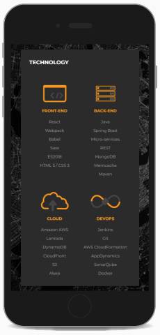

<!DOCTYPE html><html lang="en" id="top"><head><meta charset="UTF-8"/>
<meta name="viewport" content="width=device-width, initial-scale=1.0">
<meta http-equiv="X-UA-Compatible" content="IE=edge"/><title>Chris Norton: UX Portfolio</title><link href="https://fonts.googleapis.com/css?family=Open+Sans:300,600|Raleway:300,600" rel="stylesheet"/><link rel="stylesheet" href="https://cdnjs.Cloudflare.com/ajax/libs/font-awesome/4.7.0/css/font-awesome.min.css"/><link rel="stylesheet" href="styles/styles.css"/><script src="js/polyfill.min.js"></script></head></html><body><div class="header"><h1 id="header"><p class="expertise">UX/UI/Product Designer<span class="project-menu-triangle">&#9664;</span></p><div class="user-name"><a class="name" href="#top">Chris Norton</a><a class="email" href="mailto:chris@infinityspiral.com" title="Send Email"><i class="fa fa-envelope"></i></a></div></h1></div><div class="quick-nav"><h5>Projects</h5><ol><li><a href="#boeing-insite"><span class="project">Social Media Platform</span><span class="company">Boeing</span></a></li><!--li--><!--    a('href'='#pixelmania')--><!--        span.project Pixelmania--><!--        span.company Boeing--><li><a href="#boeing-historical-services"><span class="project">Historical Services Website</span><span class="company">Boeing</span></a></li><li><a href="#boeing-new-business-generator"><span class="project">New Business Generator</span><span class="company">Boeing</span></a></li><li><a href="#aquent-it-solutions-recruiting-website"><span class="project">Employee Recruiting Website</span><span class="company">Aquent IT Solutions</span></a></li><li><a href="#service-admin-portal"><span class="project">Service Admin Portal</span><span class="company">John Deere</span></a></li><li class="footer"><div class="contact-info">Contact<a href="mailto:chris@infinityspiral.com" target="_blank">chris@infinityspiral.com</a></div><a class="back-to-top" href="#top">Back to Top &#8593;</a></li></ol></div><div class="main-content"><div class="project" id="boeing-insite"><h3 class="project-title boeing">Social Media Platform</h3><div class="section"><div class="flex-row"><div><h4>Details</h4><div class="key-value-pair"><div class="key-v">Project</div><div class="val-v">Social Media Platform</div></div><div class="key-value-pair"><div class="key-v">Client</div><div class="val-v">Boeing</div></div><div class="key-value-pair"><div class="key-v">Platform</div><div class="val-v">Desktop, Tablet, Mobile</div></div><div class="key-value-pair"><div class="key-v">Launched</div><div class="val-v">Internal Boeing Network</div></div></div><div><h4>Team</h4><div class="key-value-pair"><div class="key-h">Project Lead</div><div class="val-h">Marc Rau</div></div><div class="key-value-pair"><div class="key-h">UX/UI Design</div><div class="val-h">Chris Norton, Ryan Anderson</div></div><div class="key-value-pair"><div class="key-h">Developers</div><div class="val-h">St. Louis Team</div></div></div></div></div><div class="section"><h3>Project Goal</h3><p>Boeing was hoping to make it easier for employees to connect with each other by updating the UI and adding mobile functionality to their social platform.</p></div><div class="section"><h3>Overview</h3><p>I took over UX/UI efforts to add mobile functionality to a widely used social platform within the company. This tool was part of a larger application that allowed users to find team members, post news, ask questions, form groups, and organize events. I was tasked with providing design gap solutions to a few sections in progress and a few remaining major sections. User testing had not started when I was brought on.</p></div><div class="section"><h3>Remote Collaboration Experts</h3><p>This team really taught me a lot about what an effective remote team can be like and the process was an active focus throughout the project. Even though we had team members in different states we were able to achieve better communication than a lot of the in-person teams I’ve worked on previously. We kept everyone on the same page through a mix of webcams, digital whiteboards, regular online meetings, and collective goal setting throughout an Agile process. We also used a combination of software including Adobe Suite, Sketch, InVison, Jira, and Miro.</p><h4>Digital whiteboards</h4><p>Having an interactive whiteboard gave us a huge speed boost. New features could be wireframed on the fly using post it-notes without spending time on any high-fidelity graphics. Features and flows could be vetted by developers quickly and easily. Design reviews could now do more with less effort. Cursor following tools allowed the team to see what other people were pointing to without having to switch who was sharing a screen. Screen sharing wasn't even necessary most of the time during these sessions.</p><p>Experimenting with the whiteboard as a ticketing system gave us a speed boost over Jira when it came to communicating design changes. Rather than creating a formatted ticket and attaching screenshots with descriptions scoping tasks we could now drive work with a quick post-it tacked directly to the design flow. The whiteboard system even allowed comments to be marked as resolved so it was easy to see what was still in progress. Designers could now jump into the flow and see flagged comments on the pieces that needed attention rather than reading through lengthy Jira tickets describing the design and having to open multiple tabs to see referenced screens.</p></div><div class="section"><h3>Consideration for Existing Users</h3><p>Building a user base is a lot of work and takes a lot of time to build up any sort of traction. This project already had a wide user base within the company and in some cases, was the only way for people to find employee information. We needed to get buy-in from users to avoid them dumping out when the new site launched. Ideally this relationship would have been started before any design but late is better than never.</p></div><div class="section"><h3>Do Site Refreshes Add Value?</h3><p>A valuable redesign should be able to answer, “What do we want this refresh to do?” If you can answer this question you know what is valuable to your user and to the business supporting the product. It gets a lot easier if you can tie a refresh to goals like faster onboarding, shared learning between teams, and overall shorter development cycles.</p><p>If you know the goals that add value you can move towards them. You can make decisions on whether unused features can be discarded or regrouped into new areas to create simplicity and clarity. You can design shorter routes for people which makes them want to use the new system, you don’t have to fight for it.</p><p>When I arrived a lot of the design effort was driven by converting all the old site functionality into a mobile experience and then reusing most of the mobile look and feel to update the desktop. It’s really hard to show value to existing users when you don’t add anything new because to them it just looks like you’re changing fonts and colors and shifting the navigation around. UX is a lot more effective at the beginning of a project because it doesn’t cause a lot of rework when you find out users don’t actually need the thing you spent time developing.</p></div><div class="section"><h3>Reclaiming Team Trust in the Design Process</h3><p>Shifting design decisions to be driven by user feedback on prototypes helped instill a sense of trust that the design process would work for this team. Watching users struggle let the team see where users would bail on the new design even though it was duplicating all the old functionality. Because we now had a sense of priorities we could iterate away from the original design and provide tools for the tasks users wanted to complete.</p><p>This sounds pretty basic after the fact, but when you’ve got a project going full steam ahead it takes a lot of effort and finesse to do course correction like this. Because this small piece now had success behind it, the team was more comfortable shifting away from just duplicating old functionality and instead moving towards gathering user information first to drive a design.</p></div></div><!--.project#pixelmania--><!--    h3.project-title.pixelmania Pixelmania--><!--    .section--><!--        .flex-row--><!--            div--><!--                h4 Details--><!--                .key-value-pair--><!--                    .key-v Project--><!--                    .val-v Historical Services--><!--                .key-value-pair--><!--                    .key-v Client--><!--                    .val-v Boeing--><!----><!--                .key-value-pair--><!--                    .key-v Platform--><!--                    .val-v Desktop, Tablet, Mobile--><!----><!--                .key-value-pair--><!--                    .key-v Launched--><!--                    .val-v Internal Boeing Network--><!--            div--><!--                h4 Team--><!--                .key-value-pair--><!--                    .key-h Project Manager--><!--                    .val-h Adelle Squires--><!--                .key-value-pair--><!--                    .key-h Strategist/Creative Director--><!--                    .val-h Darryl Barrabee--><!--                .key-value-pair--><!--                    .key-h UX/UI Design--><!--                    .val-h Chris Norton--><!--                .key-value-pair--><!--                    .key-h Developer--><!--                    .val-h Teresa Jellison--><!----><!--    .section--><!--        h3 Project Goal--><!--        p Boeing was looking to reduce the number of customer service calls and emails related by providing users with more information about the process of preserving historically significant Boeing artifacts like blueprints, prototypes, etc.--><div class="project" id="boeing-historical-services"><h3 class="project-title boeing">Historical Services</h3><div class="section"><div class="flex-row"><div><h4>Details</h4><div class="key-value-pair"><div class="key-v">Project</div><div class="val-v">Historical Services</div></div><div class="key-value-pair"><div class="key-v">Client</div><div class="val-v">Boeing</div></div><div class="key-value-pair"><div class="key-v">Platform</div><div class="val-v">Desktop, Tablet, Mobile</div></div><div class="key-value-pair"><div class="key-v">Launched</div><div class="val-v">Internal Boeing Network</div></div></div><div><h4>Team</h4><div class="key-value-pair"><div class="key-h">Project Manager</div><div class="val-h">Adelle Squires</div></div><div class="key-value-pair"><div class="key-h">Strategist/Creative Director</div><div class="val-h">Darryl Barrabee</div></div><div class="key-value-pair"><div class="key-h">UX/UI Design</div><div class="val-h">Chris Norton</div></div><div class="key-value-pair"><div class="key-h">Developer</div><div class="val-h">Teresa Jellison</div></div></div></div></div><div class="section"><h3>Project Goal</h3><p>Boeing was looking to reduce the number of customer service calls and emails related by providing users with more information about the process of preserving historically significant Boeing artifacts like blueprints, prototypes, etc.</p></div><div class="section"><h3>Overview</h3><p>I led the UX/UI efforts to help turn a complex submission form into a more intuitive experience to reduce the amount of handholding needed by users through the process. We were able to provide better context and reduce time filling out the form by building in featured content and including category-specific submission CTA’s within new galleries.  Showing featured content also allowed us to better promote the value of the historical services team to other divisions within the company.</p></div><div class="section"><h3>Refining and Iterating Project Goals</h3><p>To fulfill the original creative brief I was brought onto the team to handle the UX/UI on a few text-heavy pages provided by the client: Terms and Conditions page and Team Members.</p><h4>Terms and Conditions Page</h4><p>It took me a while to figure out what the Terms and Conditions page was trying to say during my first read-through which was a good indicator that the page needed a rewrite.  As it turned out, this page was less of a legal terms and conditions page and more of a reference manual that users could use if they got stuck on the form.</p><h4>Team Members Page</h4><p>The goal of the Team Members page was to find the best format to display various pieces of data like name, job role, department specialty, bio, etc.  Included with the brief were three suggested template variations that ranged from displaying data as key/value pairs to a more prose-like format.  UX was needed to find the best option. Ah, but the best option to… do what? Provide relevant information for someone writing an article? Showcase the efforts and expertise behind the scenes?</p><p>Regrouping with the client and talking through the benefits of each format helped reveal that the real problem was that users were confused about who they should choose to submit the form to. So the most important information was each team member’s area of expertise.</p></div><div class="section"><h3>Solving the Main Goal</h3><p>So once I had a better understanding of what the additional pages were supposed to accomplish I could work on providing an experience that required less legwork for the user and less cognitive load.  Ideally, this would increase submissions via the form versus having to contact a team member for assistance each time.</p><h4>Previous User Route with Creative Brief Additions</h4><ol><li>User navigates from the home page to the submission form</li><li>User is asked which team member should receive their submission</li><li>User navigates to Team Page to look up the team member that specializes in the category of the item being submitted.</li><li>User navigates to the submission form and fills in a team member</li><li>User continues with the submission form and gets stuck on a question</li><li>User navigates to Terms and Conditions page</li><li>User searches or scrolls down to the relevant help section for more information</li><li>User navigates to the submission form</li><li>Progress is lost on the form so user opens a new tab to flip between the reference material and the form, repeating steps 4-8 until all the questions are complete</li><li>User submits form</li><li>Success!  Just kidding, the user dumps out and calls the direct line for help back at Step 2</li></ol></div><div class="section"><h3>Solutions</h3><p>In both solves, the team page was removed in favor of letting the system determine where the form needed to go. This way the user could focus on their item being submitted and not have to worry so much about the process.</p><div class="flex-row"><div><h4>User Route 1</h4><ol><li>User navigates from home page to the submission form</li><li>User is walked through a form wizard that provides help text and example answers inline. A categorizing question is included so the system can route the form to the correct person behind the scenes</li><li>Success! User submits form</li></ol></div><div><h4>User Route 2</h4><ol><li>User navigates from home page to a category gallery</li><li>User navigates to the submission form from a category-specific call to action that invites the user to submit a similar item</li><li>User is walked through a form wizard that provides help text and example answers inline. The normal categorizing question is skipped because the system already knows the category based on the call to action</li><li>Success! User submits form</li></ol></div></div><h4>User Benefits</h4><p>Including galleries helped make more of the work more easily accessible and gave users a better reference for what types of items would be accepted into the archives. Previously the homepage contained a very general overview of what the division did and instructions on where to find the form.  Archives were seen in-person only.  Providing categorized galleries also helped to shortcut the categorization issue that users were struggling to understand by allowing them to submit similar items to the ones already on screen.</p></div></div><div class="project" id="boeing-new-business-generator"><h3 class="project-title boeing">New Business Generator</h3><div class="section"><div class="flex-row"><div><h4>Details</h4><div class="key-value-pair"><div class="key-v">Project</div><div class="val-v">New Business Generator</div></div><div class="key-value-pair"><div class="key-v">Client</div><div class="val-v">Boeing</div></div><div class="key-value-pair"><div class="key-v">Platform</div><div class="val-v">Desktop, Tablet</div></div><div class="key-value-pair"><div class="key-v">Launched</div><div class="val-v">Internal Boeing Network</div></div></div><div><h4>Team</h4><div class="key-value-pair"><div class="key-h">Project Manager</div><div class="val-h">Shing-Hwa Cheung</div></div><div class="key-value-pair"><div class="key-h">UX/UI Design</div><div class="val-h">Chris Norton</div></div><div class="key-value-pair"><div class="key-h">Developer</div><div class="val-h">Chris Norton, India Team</div></div></div></div></div><div class="section"><h3>Project Goals</h3><p>Boeing was looking for help organizing efforts from two previous versions of an existing application into a more streamlined, accessible system combining previous implementations of Tableau and providing a more intuitive way for sales reps to act on upcoming sales opportunities.</p></div><div class="section"><h3>Overview</h3><p>I led the UX effort on Boeing's "New Business Generator" tool allowing sales reps to manage active client relationships and manage billions of dollars in revenue.</p></div><div class="section"><h3>Save money through UX</h3><p>A lot of organizations sometimes have trouble justifying bringing UX into the budget.  UX is a little bit intangible at the start and it's hard to quantify exactly how it will help adding another person to the team.  The thing is though, when a project has several hypothetical developers billing at $150+/hr, 8 hours a day, 5 days a week, it adds up fast.  Even just 5 developers would be $6,000 a day, and $30,000/week.</p><p>If you can find problems before any of those folks get involved you start saving a lot of money really fast. Throughout the course of this project I probably saved the dev team about 4 or 5 weeks worth of  work based on their initial screenshots of how the project flowed previously.</p><h4>Key findings</h4><ol><li><div><p>Initially this project was slated to be launched on desktop, tablet and mobile phones.  Talking with actual users revealed that the complexity of the charts and data comparisons made it extremely difficult to see all necessary components at once on a mobile phone and that users would find this experience mostly unhelpful.</p><p><strong>Solution</strong><br>The mobile phone requirement was removed.</p></div></li><li><div><p>The previous implementations had a lot of restrictions on how they could access and display data through the existing architecture.  Even though the new version allowed data to be grouped and displayed more freely it was hard for the team to imagine the product working beyond what it did previously.</p><p><strong>Solution</strong><br>Mapping out some basic user task flow allowed me to see where we were making users backtrack further than necessary.  Condensing steps and eliminating duplicate routes allowed users to jump from one task to another faster and eliminated dev requirements.</p></div></li></ol></div></div><div class="project" id="aquent-it-solutions-recruiting-website"><h3 class="project-title aquent">Recruiting</h3><div class="section"><div class="flex-row"><div class="video-container"><video id="aquent-home" width="223" height="470" poster="video/aquent-home.jpg">
<source src="video/aquent-home.mp4" type="video/mp4">
</video></div><div><h4>Details</h4><div class="key-value-pair"><div class="key-v">Project</div><div class="val-v">Recruiting Website</div></div><div class="key-value-pair"><div class="key-v">Client</div><div class="val-v">Aquent IT Solutions</div></div><div class="key-value-pair"><div class="key-v">Platform</div><div class="val-v">Desktop, Tablet, Mobile</div></div><div class="key-value-pair"><div class="key-v">Launched</div><div class="val-v"><a href="https://aquent-it-solutions.com/" target="_blank">aquent-it-solutions.com</a></div></div></div><div><h4>Team</h4><div class="key-value-pair"><div class="key-h">Project Manager</div><div class="val-h">Matt Kruse</div></div><div class="key-value-pair"><div class="key-h">UX/UI Design</div><div class="val-h">Chris Norton</div></div><div class="key-value-pair"><div class="key-h">UX Research/Testing</div><div class="val-h">Chris Norton<br>Pooja Arshanapally<br>Mark Hein</div></div><div class="key-value-pair"><div class="key-h">Front-end Developer</div><div class="val-h">Chris Norton</div></div></div></div></div><div class="section"><div class="flex-row"><div><h3>Project Goal</h3><p>Aquent IT Solutions was looking attract more recruits by updating the current website with a more modern look</p></div></div></div><div class="section"><h3>Overview</h3><p>I led the UX/UI/Front-end development efforts for the project which included a deep dive into the core business model and journey map of hiring on a new employee. By understanding the surrounding steps we were able to define better what role the website was actually playing in the overall process.</p></div><div class="section"><h3>Refining and Iterating Project Goals</h3><p>This project is a great example of how UX can help unify a wide variety of opinions under a single banner. When I was brought into the team the website was operating under the premise that, "of course we need a website because a business needs a website to look like a real business." Businesses build websites like this all the time just to get something out there, but run into trouble when it comes time to update and prioritize content. Everyone always has a different idea of what they think users want or need. The solution is pretty easy though - just ask the users.</p><p>Of course asking users seems obvious now, but companies wrestle with sites like these for years until someone comes in and actually identifies the problem. A lot of the time the problem is that they really just don’t have a clear idea of what their users are trying to get from the site. Page tracking was in place so they knew some pages were more popular than others, but with who? And did those pages lead to conversions?</p><p>A lot of conversations at the start revolved around what graphics looked old or what the best font sizes were. No real conversations about users being able to find necessary information or even who the users were. Was the purpose to attract new business, or was it to attract new recruits?  It wasn’t going to get us very far talking about what color a door should be if we didn’t first talk about if that door needed to be attached to a car or a house.</p><p>Prioritizing site goals and identifying users made it a lot easier to direct the team away from cosmetic changes and get them to focus on usability gaps by asking measurable questions like "Are we getting less job candidates calling in about H1B visas since adding the new section with visa information?" Less people calling in about visas? Yes? Okay success then. Next feature!</p></div><div class="section"><p></p><h3>Defining Users to Create Better Project Deliverables</h3><h4>User 1: New business</h4><p>Previously the website was hoping to appeal to both new business and employee candidates. Looking into past projects, we uncovered that very few business leads mentioned the website as a deciding factor. Most new business was attained through existing partner relationships with almost zero contact coming in from the site. It just wasn’t factor.</p><h4>User 2: Employee Recruits</h4><p>Aquent generates a significant portion of revenue by finding developers and placing them on site with client teams. By talking with recruiters we found that all of these job candidates touched the website at some point and it did have a significant impact on their decision to pursue an interview. So our biggest impact would be in catering to job candidates with the goal of getting more of them to reach out via the site to begin the interview process.</p></div><div class="section"><p></p><h3>User Testing and Gathering Users</h3><p>We were able to get a fresh supply of user testing by adding new hires as site testers. Through a mix of ongoing surveys and live-recorded usability sessions we were able to uncover what conversations users were hoping to have with the site and where that communication broke down. Also by asking job candidates about the website we got more insight into user frustrations throughout the recruitment process that ran a lot deeper than just making a website look more modern.</p></div><div class="section"><h3>Test Findings</h3><h4>Menus</h4><p>During testing we found that our menus were unclear. Some menu items were trying to be too cute. Straightforward, boring menus worked better.</p><h4>Users hate filling out job forms</h4><p>Users also hated contact forms and filling out job history. Except for one user, the vast majority preferred the option of just sending an email with a resume versus filling out a lengthy form with job history. We took out the contact form and replaced it with an email where they could send it in to a real person. After each testing session we made the smallest effective change to fix the problem and then retested. Over and over until we stopped having the problem.</p><h4>Other big problems</h4><ol><li>Candidates  didn't feel informed about the overall process or were left wondering about next steps causing them to leave the process.</li><li>Users had a hard time understanding what the company actually did.</li><li>Candidates didn't know whether they were talking to Aquent the parent company or Aquent IT Solutions the technology division which caused users to bail.</li><li>Each social media channel looked like it was run by a different team.</li></ol><p></p><h3>Solving the biggest problem of all: TIME</h3><p>In some cases we found the hiring process was taking upwards of two months!  That was way too long between contacting a candidate and placing them on site with a client. This was easily our biggest hurdle in being able to place new candidates quickly and competitively.</p><p>Overlaying our decades-old process flow on top of our newly-created journey map allowed me to uncover our own roadblocks. We had too many interviews and they were spaced too far apart. Also approvals during the process, originally meant to save people time were causing scheduling conflicts and pushing back timelines.</p><h4>PREVIOUS INTERVIEW PROCESS (2 WEEKS BETWEEN STEPS!)</h4><ol><li><p><strong> WEEK 1-2</strong><br>Recruiter reaches out for a short phone conversation to gauge interest and talk about opportunities</p></li><li><p><strong> WEEK 3-4</strong><br>HR - Screens for temperament and general fit into the project team environment, pre-screens for technical interviewer so a part one tech interview. In at least one case a user ended the process at the confusion of being given a tech interview by a non-tech person.</p></li><li><p><strong> WEEK 5-6</strong><br>Technical - Screens for advanced technical knowledge, tech interview part 2</p></li><li><p><strong>WEEK 7-8</strong><br>Hiring company/Client - Screens for their own individual team so tech interview part 3</p></li></ol><h4>REVISED PROCESS (2 Months down to 7 days or less)</h4><ol><li><p><strong>DAY 1 - Gauge interest conversation and screen for behavior</strong><br>Recruiter finds a potential candidate and reaches out for a short conversation to gauge interest in setting up an interview. The recruiter pre-screens for behavioral and to answer HR related questions instead of setting up a whole other interview before a tech interview.</p></li><li><p><strong>Day 2 - Tech interview via Skype or in Person</strong><br>For candidates that have reached out, resumes have been screened already by a senior developer. This was one of the biggest blockers. Having the tech take five minutes to pre-screen a resume after a candidate expressed interest far outweighed the 1-3 weeks lost in waiting for someone with senior experience to free up time to pre-screen after that first interview had taken place.  Also it worked towards solving the problem of experienced candidates being technically interview by inexperienced staff.</p></li><li><p><strong>Day 3</strong><br>Candidate interviews with client team where they will potentially be placed.  Unfortunately this still means a multi-day interview process but it does take the number of days the candidate down to two surgical time slots versus 4 days spaced out over months.</p></li></ol></div><div class="section"><div class="flex-row"><div><h3>Content strategy</h3><p>Having users not understand what the company did was a big deal. Asking around, even internal employees struggled with any sort of elevator pitch. It made sense, the main source of marketing for decades had been the website and the website changed direction every few years. So really the content strategy needed to include internal effort as well to help our own people understand what they were working together to achieve. I created guidelines for content and tone for social media, internal communication and external marketing.</p></div><p style="flex:0 0 300px;"></p></div><h4>Social media</h4><p>We found candidates really only found us through a select few social media sites. As a conservation of effort we brought the branding in line with those particular sites and closed the remainder. We also committed to a content strategy to prevent these areas from looking abandoned in the future.</p><h4>Imagery</h4><p>I defined example imagery to be used in the marketing materials, picking overhead drone photos to create the feeling of seeing the big picture through future tech which is exactly what we provide in our solutions to clients: technology-based solutions that work with large amounts of data at a digestible scale.</p></div></div><div class="project" id="service-admin-portal"><h3 class="project-title john-deere">Service Admin Portal</h3><p></p><div class="section"><div class="flex-row"><div><h4>Details</h4><div class="key-value-pair"><div class="key-v">Project</div><div class="val-v">Service Admin Portal</div></div><div class="key-value-pair"><div class="key-v">Client</div><div class="val-v">John Deere</div></div><div class="key-value-pair"><div class="key-v">Platform</div><div class="val-v">Desktop, Tablet</div></div><div class="key-value-pair"><div class="key-v">Launched</div><div class="val-v">Internal JD Network</div></div></div><div><h4>Team</h4><div class="key-value-pair"><div class="key-h">Project Manager</div><div class="val-h">Nancy Early</div></div><div class="key-value-pair"><div class="key-h">UX/UI Design</div><div class="val-h">Chris Norton</div></div><div class="key-value-pair"><div class="key-h">HTML/Sass/CSS</div><div class="val-h">Chris Norton</div></div></div></div></div><div class="section"><h3>Project goals</h3><ol><li>Combine various single-use business applications under one central app.</li><li>Provide a catered experience to business owners, dealers, sales representatives, and service technicians that maintains current level of functionality</li><li>Make digital assets more re-usable and discoverable between departments</li></ol></div><div class="section"><div class="flex-row"><div><h3>Overview</h3><p>John Deere was looking to reduce the cost of equipment maintenance by bringing duplicate silo apps under a singular technology solution and dev team.  The hope being that a unified application would allow for a more a more consistent experience and better visibility between departments and throughout the full workflow.</p></div><p style="flex:0 0 400px;"></p></div><p>The team decided initially decided to minimize usability and adoption issues by basing large portions of the creation and editing workflow around existing websites already in use by various teams. Where possible the flow for editing and creating assets would remain similar.  Much of the new flow came from connecting assets that were previously isolated and could now talk to each other.   Budget was also a consideration so starting from scratch was going to be out of scope.</p></div><div class="section"><h3>Defining Users</h3><p>Using the project requirements document, email interviews, and phone calls and user tasks we built out personas which allowed us to prioritize and find each user’s most needed tasks.</p><h4>Business Owners and Dealers</h4><p>Needed to be able to monitor overall profitability and admin</p><h4>Sales Representatives</h4><p>Needed the ability to quickly pull from existing template agreements, view existing agreements and work within bundled groups of agreements for customers.</p><h4>Technicians</h4><p>Needed to be able to update the status of their job tickets on customer machines as services were performed.  They also needed to be alerted to upcoming and past due tasks to be able to predict upcoming needs for staff workloads and ordering inventory.</p></div><div class="section"><p></p><h3>User Testing and Findings</h3><p>In-person workshop sessions were used to ensure user tasks were available and intuitive for each user type.  In some cases, we found that users were using multiple tabs as a gap fix to not having the context of the data in front of them for either global or minute actions even in the existing apps.  These areas offered us the chance to make the experience better by showcasing the missing data alongside the task.</p><h4>Findings</h4><p>One of the biggest challenges was introducing UX into an already established Agile-like development process. While we tried to map out major connections between sections ahead of development we ran into cases where the workflow dead-ended with the actual backend data available. Some additional concept proofs for specific sections may have been helpful in preventing some of the data availability mismatches as well as budgeting more time for iteration as the team adjusted to including UX into their process would have given more wiggle room.  Overall, allowing the users to have feedback early and often did make adoption smoother and users were less surprised with the final product.</p><h4>Card Sorting for Better Navigation</h4><p>To pin down navigation, users were asked to place task cards into groups that made the most sense to them.  Consideration was also given to how frequently the user would need to access the task.</p><h4>Tree/Chalk-mark for Menus and Options</h4><p>Users were presented with menu structures and asked where they would click to find areas of the site or next steps in the work-flow.</p><div class="flex-row"><div><h4>Whiteboard/Wireframe Prototypes</h4><p>In some cases, multiple levels of user access complicated the approval structure of assets to the point where workflows had to be completely redefined. Low-fidelity prototype drawings allowed us to check in with users frequently and make sure the task could still be completed before being moved into high-fidelity interactive prototypes.</p></div><p style="flex:0 0 300px;"></p></div><h4>Consolidating multiple UI Specifications</h4><p>To build interactive, high-fidelity mockups we were able to pull from a living style guide being developed in parallel by a different team for many components.  When components were missing completely we took cues on fonts, colors, spacing and icons from what was already being developed and matched them as close as possible.  Part of my role included policing the style guide and returning it to developers if the final product mismatched these brand standards.</p><p></p></div></div></div></body><script src="js/app.js"></script>